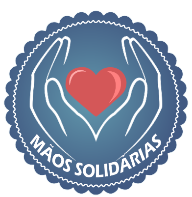
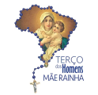
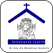

Pastorais e movimentos
Bem-vindo ao nosso portal oficial dedicado às pastorais e movimentos da Paróquia Nossa Senhora do Perpétuo
Socorro de Irati. Aqui, você
encontrará informações valiosas sobre como nossa comunidade se une para servir a Deus e ao próximo.
Explore, envolva-se e descubra como você pode fazer parte da missão Estamos a serviço do Evangelho, evangelizadora da Igreja
Sobre Nós
Nossa Missão:
Nossa igreja é um lugar de acolhimento, crescimento na fé e serviço ao Reino de Deus. Estamos a serviço do Evangelho, testemunhando a sinodalidade em comunhão com nossa igreja diocesana, como discípulos missionários engajados através dos organismos, pastorais, movimentos e associações, que caracterizam como "forças vivas" de toda a dimensão paroquial. As nossas pastorais e movimentos são parte fundamental da missão, oferecendo diversas oportunidades para que todos possam participar ativamente da vida da igreja.
Nossos Valores:
- Liturgia Sacramental: Celebramos todos os sacramentos, nossa fonte de vida e graça para os fiéis batizados.
- Fé e Devoção: Cultivamos uma fé viva e comprometida com os ensinamentos de Cristo e da Igreja.
- Solidariedade: Apoiamos e ajudamos aqueles que estão em necessidades materiais e espirituais.
- Comunhão: Promovemos um ambiente de vida fraterna e participação.
- Crescimento Espiritual: Promovemos momentos de oração, adoração, meditação e aprofundamento na vida espiritual, seja coletiva ou pessoal.
- Celebração da Padroeira: Cultivamos a devoção à Padroeira Nossa Senhora do Perpétuo Socorro com festa solene, novenas e terço Mariano.
- Dimensão Eclesial: Estamos interligados, numa dimensão eclesial entre as 21 comunidades (Matriz e Capelas).
- Dimensão Missionária: Expressamos a experiência da vida pastoral a partir do Evangelho.
Nossas Pastorais
Nosso espaço virtual é dedicado a apresentar os diversos pastorais que atuam em nossa comunidade, cada uma com sua missão especial de servir e evangelizar. Aqui você encontra informações sobre eventos, atividades e oportunidades de envolvimento. Convidamos você a explorar, conhecer e participar ativamente de nossa missão de construir uma comunidade mais unida, solidária e cheia de fé.
Entre nos links abaixo e conheça os trabalhos realizados por nossas pastorais
Grupo de Oração Jovens Nossa Senhora de Pietà (GOJ)
colocar do jado do RCC

O Goj é um grupo de oração pertencente ao movimento da Renovação Carismática Católica, ele acontece todo 1° e 3° sábado do mês, as 19h no salão paroquial. Com atividades dinâmicas e momentos de espiritualidade, promovemos a formação de jovens comprometidos com o evangelho e o serviço ao próximo.
Grupo de Jovens Sentinelas da Esperança
O Grupo de Jovens Sentinelas da Esperança nasceu em Janeiro de 2024, fruto do anseio e desejo dos jovens da matriz em se reunir e viver a juventude em unidade, com o apoio e direção espiritual do Padre José Nilson o nome foi escolhido para dar luz ao caminho do jovens, significando o sentinela, soldado, vigia. Esperança que é o próprio Cristo. Este grupo está ligado à Pastoral da Juventude Diocesana
Meninas de Maria
A Pastoral Meninas de Maria acolhe meninas com idades entre 5 e 13 anosque, inspiradas no exemplo da Virgem Maria, buscam ganhar fé, fraternidade e serviço à celebração litúrgica. Com encontros de oração, formação e atividades sociais, incentivamos o desenvolvimento espiritual e humano, promovendo valores cristãos e o amor ao próximo, sempre com alegria e união. A Pastoral Meninas de Maria está ligada à Pastoral Litúrgica e Vocacional
Pascom

A Pastoral da Comunicação da nossa igreja! Somos a ponte que conecta nossa comunidade, levando a mensagem de fé, esperança e amor através dos meios de comunicação, para que juntos possamos viver e compartilhar o Evangelho
Pastoral da acolhida
A Pastoral da Acolhida é o braço de amor e receptividade da comunidade, sendo responsável por receber, orientar e integrar todos que chegam à Paróquia. Com espírito de acolhimento cristão, os membros atuam com gentileza e empatia, criando um ambiente de fraternidade em nossas assembélias litúrgicas
Pastoral da Catequese
A catequese é uma ação da igreja que nasce do mandato missionário de Jesus, quando disse "ide ,pois, fazer discípulos entre todas as nações". A catequese tem por objetivo acompanhar e educar na fé e para a fé, crianças, jovens e adultos.
Pastoral da Comunicação (BIPS)
O Boletim Informativo Perpétuo Socorro é uma ferramenta essencial para manter nossa comunidade unida e bem informada. Nele você encontrará notícias sobre eventos, celebrações, formações e iniciativas que visam fortalecer nossa fé e solidariedade. Acompanhe as atividades, participe ativamente e contribua para a construção de uma comunidade vibrante e acolhedora, sempre sob a proteção de Nossa Senhora do Perpétuo Socorro.
Pastoral da Criança
A Pastoral da Criança é uma organização católica dedicada ao cuidado e desenvolvimento integral de crianças e famílias em situação de vulnerabilidade. Por meio de ações comunitárias, promove saúde, nutrição, educação e cidadania, capacitando voluntários e fortalecendo vínculos familiares. Seu trabalho é guiado pela fé, amor e solidariedade
Pastoral da Solidariedade:
A Pastoral da Solidariedade tem como missão promover a inclusão e o apoio às pessoas em situação de vulnerabilidade em nossa comunidade. Por meio de ações de assistência, visitas e campanhas de arrecadação, buscamos atender às necessidades básicas e fortalecer laços de fraternidade. Juntos, construímos uma rede de amor e solidariedade, onde cada gesto faz a diferença na vida do próximo.
Pastoral de Assuntos Econômicos
A Pastoral de Assuntos Econômicos tem a missão de administrar com transparência e responsabilidade os recursos financeiros da paróquia, direcionando à sustentabilidade das atividades pastorais e ao cuidado com os mais necessários. Colabore para que as finanças sejam gerenciadas de forma ética, garantindo o bom andamento
Pastoral do Batismo
A Pastoral do Batismo tem a missão de acolher, orientar e preparar pais e padrinhos para o sacramento do batismo. Esse momento marca o início da vida cristã e o ingresso na comunidade de fé. Juntos, refletimos sobre a importância da fé, dos valores cristãos e do compromisso de guiar a criança no caminho de Cristo.
Pastoral do Canto
A Pastoral do Canto é um ministério essencial que eleva a espiritualidade da nossa comunidade. Com vozes unidas, expressamos nossa fé e tocamos o coração dos fiéis. Através da música, convidamos todos a uma experiência de entusiasmo, fortalecendo laços e celebrando a presença divina em nossos
Pastoral do dízimo
A Pastoral do Dízimo é um chamado à generosidade e à partilha. Através do dízimo, contribuímos para o sustento da nossa comunidade e a realização de obras sociais. Essa prática nos aproxima de Deus e fortalece nossa fé, mostrando que somos instrumentos de amor e solidariedade.
Pastoral dos Coroinhas
A Pastoral dos Coroinhas é um ministério que envolve jovens no serviço litúrgico, promovendo a vivência da fé e do amor à Igreja. Com alegria e dedicação, as coroinhas ajudam nas celebrações, aprendendo sobre a espiritualidade e a importância do serviço.
Pastoral dos Ministros da Comunhão
A Pastoral da Comunhão é uma Pastoral que tem como atividades: A de "servir o altar", junto ao sacerdote durante as Missas, e a visitação aos doentes da comunidade.
Pastoral Familiar:
A Pastoral Familiar é um espaço de acolhimento e fortalecimento das famílias em nossa comunidade. Com apoio e orientação, promovemos o diálogo, a oração e a vivência dos valores cristãos. Nossa missão é cuidar, apoiar e ajudar as famílias a crescerem na fé e no amor.
Pastoral Infância Missionária:
A Pastoral da Infância Missionária é um movimento que forma crianças como verdadeiras missões do amor de Deus. Com atividades lúdicas e educativas, promovemos valores cristãos, solidariedade e evangelização entre os pequenos. Juntos, buscamos inspirar uma nova geração a servir e transformar o mundo com amor.
Pastoral Litúrgica:
A Pastoral Litúrgica tem como objetivo promover uma experiência profunda e significativa de celebração nos momentos litúrgicos da comunidade. Através da preparação adequada das missas, celebrações e ritos, buscamos envolver os fiéis na espiritualidade da fé, promovendo a participação ativa e consciente, enriquecendo assim a vivência do sagrado
Pastoral dos Surdos:
A Pastoral dos Surdos é uma ação comprometida em promover a inclusão e a evangelização das pessoas surdas na vida da Igreja. Por meio de encontros, celebrações adaptadas e formação específica, buscamos facilitar o acesso à mensagem de Cristo, garantindo que todos possam vivenciar sua fé de forma plena e participativa. Com amor e respeito, buscamos construir uma comunidade onde a diversidade é valorizada e cada pessoa é acolhida
Nossos Movimentos
Os movimentos da Igreja Católica são iniciativas que visam promover a espiritualidade, o engajamento e a vivência da fé entre os fiéis. Entre eles, destacam-se o Movimento Rosário Vivo, o Terço dos Homens e as Zeladoras de Capelinhas. Esses grupos incentivam a oração em comunidade, o fortalecimento dos laços fraternos e a devoção mariana, contribuindo para a formação espiritual e o compromisso com os ensinamentos de Cristo. Cada movimento possui características únicas, mas todos compartilham o objetivo comum de aprofundar a fé e promover a união entre os membros da Igreja.
Entre nos links abaixo e conheça os trabalhos realizados por nossos movimentos
Apostolado da Oração
(REDE MUNDIAL DE ORAÇÃO DO PAPA)
O Apostolado da Oração é um movimento que promove a espiritualidade através da oração e da reflexão. Unindo fidelidade em comunhão, buscamos aprofundar nossa relação com Deus, intercedendo por interesse do mundo e da Igreja. Junte-se a nós e fortaleça sua fé, tornando-se um verdadeiro instrumento de paz e amor. Juntos, podemos espalhar a luz de Cristo e transformar vidas por meio da oração.
Divina Misericórdia
O Movimento da Divina Misericórdia é uma iniciativa que visa espalhar a mensagem do amor e compaixão de Deus, conforme revelada a Santa Faustina Kowalska. Através da oração, especialmente a Oração da Coroa da Misericórdia, promovemos a devoção, o perdão e a solidariedade, transformando vidas e comunidades em um ato de fé e esperança. Juntos, buscamos viver a misericórdia de Deus em nosso cotidiano, acolhendo os necessitados e promovendo a paz e o acolhimento
RCC

O Movimento de Renovação Carismática Católica (RCC) é um movimento que busca renovar a experiência pessoal com o Espírito Santo. Por meio de encontros, orações e retiros, incentivamos a vivência da fé de maneira vibrante e alegre. A RCC promove a espiritualidade carismática, o louvor e a evangelização, convidando todos a uma relação mais profunda com Deus.
Rosário Vivo
O Movimento Rosário Vivo é uma iniciativa da Igreja Católica que promove a oração em comunidade, reunindo fiéis em torno do terço. A proposta visa aprofundar a espiritualidade mariana, fortalecer os laços comunitários e incentivar a vivência dos ensinamentos de Cristo. Através da oração, busca-se a paz e a harmonia.
Terço dos homens
O Terço dos Homens é um movimento católico que reúne homens em oração, promovendo a espiritualidade e a fraternidade. Através do rezar do terço, os participantes buscam fortalecer sua fé, desenvolver uma relação mais profunda com Deus e apoiar-se mutuamente nas lutas diárias. É uma oportunidade de renovação e compromisso cristão.
Zeladoras de Capelinha
As Zeladoras de Capelinhas são mulheres dedicadas à promoção da devoção mariana, cuidando e zelando por capelinhas em suas comunidades. Elas organizam encontros de oração e promovem a disseminação da fé. Além de fortalecer a espiritualidade pessoal, o grupo promove a união e o amor entre os fiéis, cultivando uma rede de apoio e amizade.
Como Participar
Envolva-se:
Cada um de nós tem um papel único a desempenhar na construção de uma comunidade vibrante e amorosa. Encorajamos todos a se envolver nas nossas pastorais e movimentos. Confira os seguintes passos para começar:
- Escolha uma Pastoral ou Movimento: Veja as áreas que mais lhe interessam e como elas se alinham com seus dons e paixões.
- Participe de um Encontro: Venha conhecer melhor o grupo, participar das reuniões e se engajar nas atividades.
- Voluntarie-se: Ofereça seu tempo e habilidades para contribuir com os projetos e iniciativas.
- Mantenha-se Informado: Acompanhe nossas atualizações e notícias para estar por dentro das próximas atividades e eventos.
Contato
Estamos Aqui para Ajudar:
Tem alguma dúvida ou deseja mais informações? Entre em contato conosco!
- Telefone: [Número de Telefone]
- E-mail: [Endereço de E-mail]
- Endereço: [Endereço da Igreja]
- Redes Sociais: [Links para redes sociais]
Testemunhos
O que Dizem Sobre Nós:
"Participar da Pastoral da Juventude foi transformador para minha vida. Senti-me acolhido e encontrei uma verdadeira família na igreja." – [Nome do Membro]
"A Pastoral Familiar nos ajudou a fortalecer nossa relação e nos deu ferramentas para enfrentar os desafios da vida em família." – [Nome do Membro]